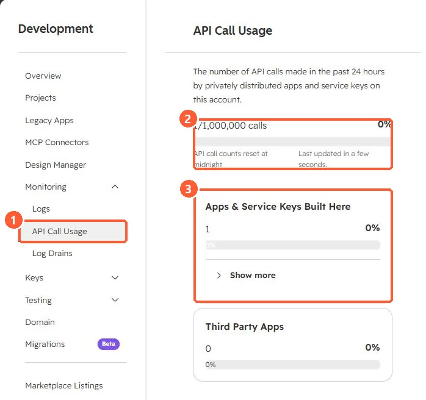

Short answer
For privately distributed apps, HubSpot's docs list 100 requests per 10 seconds per app and 250,000 per day per account on Free and Starter, 190 per 10 seconds with 625,000 per day on Professional, and 190 with 1,000,000 per day on Enterprise. The API limit increase add-on raises it to 250 per 10 seconds. Exceeding a limit returns 429. Search endpoints have their own limit of five requests per second and do not return the rate limit headers.
1. See your usage
Development, Monitoring, API Call Usage shows the last 24 hours. My demo portal shows 1 of 1,000,000 calls, the Enterprise daily limit.


2. The 429 response
HTTP/1.1 429 Too Many Requests
X-HubSpot-RateLimit-Interval-Milliseconds: 10000
X-HubSpot-RateLimit-Max: 190
X-HubSpot-RateLimit-Remaining: 0- The burst limit applies per app. The daily limit is shared by all apps in the account.
- HubSpot says error responses should stay under 5% of daily requests.
- High request volume can also produce 5xx errors. Treat them like 429s.
3. Cut the number of calls
Use batch endpoints (see batch upsert), webhooks instead of polling (see webhooks), and the search API carefully (see search API limits).